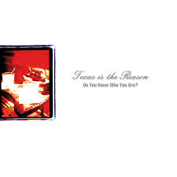

31 Days of Punk
The punk album for 12/26/2025 is:
Do You Know Who You Are?
by Texas is the Reason
Ben's thoughts
On December 2nd, we reviewed the Misfits album Static Age where in the song “Bullet” they exclaim “Texas is the reason that the president’s dead.” Well in 1994 a couple guys from New York thought it would be a very fitting band name, and with that Texas Is The Reason was born. Made up from 80’s punk regulars Norman Brannon and Chris Daly, this band established some of the earliest sounds of the emo era, while still holding a tried and true original sound. During their first run as a band they released a beloved self-titled EP, and its quiet success would eventually lead to the release of their full album “Do You Know Who You Are?” (a title taken from the last words that John Lennon ever heard). We will get to the album in a moment however lets finish the history. This caravan would take its seat 1997, and only reunite for special events and anniversaries. Actually they currently have plans to play some shows in 2026 so stay tuned.
Do You Know Who You Are? is a long and winding road of heavy riff-powered cries and succulent guitar instrumentals. As previously stated, this band’s attitude and discography contained some of the earliest looks at what would be called emo, and one thing that is undeniable about that era is its affinity for run-on song titles. This album included many such as “There’s No Way I Can Talk Myself Out of This One Tonight (The Drinking Song)” - even the album title is an example of these long-running titles that became a staple of the period. One of the most notable tracks has to be the title track, which takes a break from the slammer that is the first half of this album and presents the listener with something to rest the ears on. This is surprisingly effective because instead of the loudness muddying the music and growing stale (Which happens to an unfortunately high amount of rock bands), the auditory rest allows for even more eager energy in the following tracks. I want to point out just how influential and ahead of its time the guitar writing was for this album. Not many bands were doing that whole twinkly arpeggio number (featured in “The Day’s Refrain”) before these guys. Now those classic emo riffs seem just about overdone, however at the time they were unheard of. Another kudos I have to grant this album is its tracklist, which we discovered with the release of their compilation album, was a hard decision. Now, I am one of the first to criticize an artist/band that releases too much at once, mainly because a message or aesthetic can get lost in over-concentration. However, these cats made an album so great that within its 9 track run, there does not seem to be any track unnecessary, and in fact I think making it longer would have only served their fans a wider spoonful.
Connor and I were never meant to be critics, and the purpose of this blog is not to criticize, but to elevate and celebrate the music we love. That being said this album is one of the hardest on the list to poke holes in; to my ears it is flawless. In fact a benefit to their short time together was that they never released a single bad song, seriously, I would implore you to pick out a mediocre installment of this band’s legacy. I am only hoping that very soon I can hear it live in all its glory. Till then I hope you guys all really enjoy the uncouth, irritable, and classic sounds of Texas Is The Reason.
Connor's thoughts
“Texas is in outrage when your husband is dead, Texas is in outrage when they pick up his head, Texas is the Reason…”
If you’ve been following along with the days, you might remember December 2nd’s album “Static Age” by The Misfits, which contained “Bullet”, a song about the popular conspiracy theory surrounding JFK’s assasination. This would go on to inspire the name (and songs) of one of punk’s biggest what-ifs, Texas is the Reason.
An overnight phenomenon, “Do You Know Who You Are?” is a 90s post-punk masterpiece. It didn’t just catch the eyes of major record labels like Revelation Records after their first ever show, but scratched the punk itch of the entire New York underground scene with hits like “Back and to the Left” and “If It’s Here When We Get Back”. They had a composition of the most beautiful, yet gnarly guitar tones and hardcore drum kicks that blew every venue away. Garrett Klahn screams about the search for meaning, self disillusion, and of course, the Magic Bullet conspiracy, contributing to their constroversial namesake and in turn their punk rock image. It all comes together as this uniquely melodic LP that covers much more than just punk, but also prog rock, alternative, and emo.
Texas is the Reason’s short story doesn’t end with a death, nor a lack of creative will, but rather a personal conflict with the band’s founding member, Norman Brannon. The 90s harboured a lot of homophobia in the punk/rock scene, something that has progressively gotten better in the last 30 years with vocal activists and the like, but is nowhere near gone. Brannon has spoken publicly about his struggles being a young closeted gay man at this time, and how he was afraid coming out would result in problems within the band and otherwise their growing popularity in the music scene. That being said, with the band’s 2025 reunion, Brannon announced he would not be returning, and stated that he has nothing but love for the band, but does not want to revisit that time in his life.
With an album so poetically named “Do You Know Who You Are”, inspired by the last words ever said to John Lennon, I personally come back to its interpretation as self discovery, and the common battles we as people go through to be at peace with ourselves. It is amazing the amount of outpouring support we see for the LGBTQIA+ community in the modern day, as well as the progress made over the last few decades, but the inner-personal hurdles to cross for the LGBTQIA+, and those trying to find self-worth, purpose, and happiness, should not be forgotten, even if the world is more accepting. No matter their original intent of the title, Brannon’s circumstance is not new to the music scene nor the everyday person, and the contemporary themes behind Texas’s lyrics can attest to the struggles faced by the guitarist, and people, all over the world.
My feelings on this album have not changed since the second I finished listening to it way back when. The band is not only the reason I am a crazy Misfits fan now, but this album serves as one of the handful of albums I consider to be perfect, front to back. And I say that not because of its killer vocals, or how easy it is to air guitar to their sweet instrumentals, but rather how consistently I was surprised. I could pick out instances in songs that would turn my mind to a completely separate genre within rock and it wouldn’t just be for a few seconds, but rather the whole song would be a showcase of their incredible rendition on a particular style. It made every track exciting to listen to, and given their short run as a band, it creates the rare instance of an entire discography filled with nothing but astoundingly gorgeous music (It's very impressive in my opinion). This album will always have a special place in my heart, taking me through moments of imposter syndrome and self doubt just as much as times I need to tap my foot, jump around, and bang my head.
Continue to look out for each other, continue to support each other as much as yourself, and go check out “Do You Know Who You Are?” by Texas is the Reason.
Listen on Spotify: